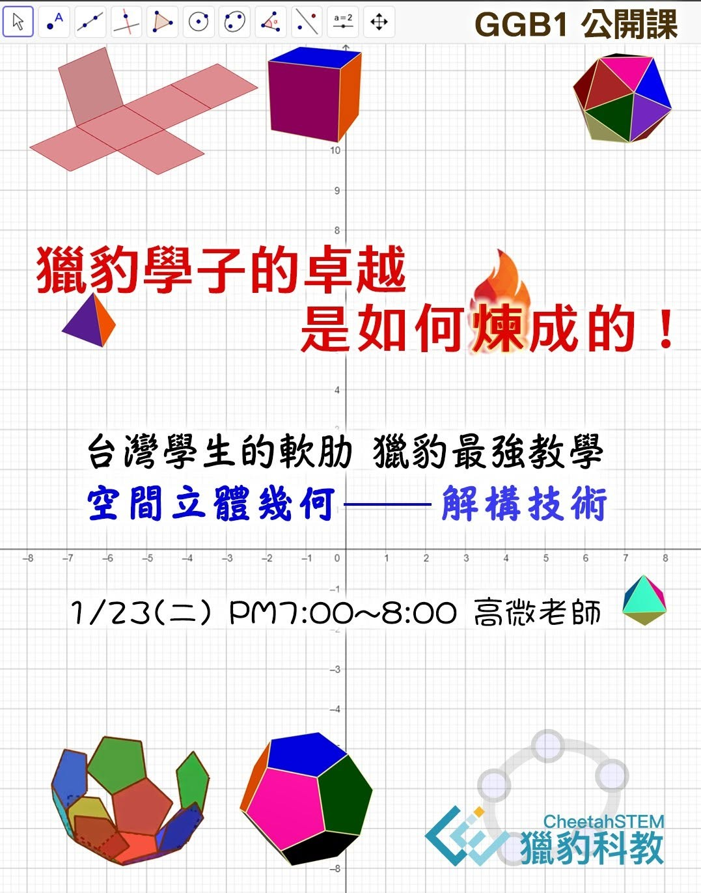

空間立體幾何GGB1免費公開課，1/23(二)限定直播！🎯
1/23(二)晚上 7:00~8:00
空間立體幾何解構技術 高微老師授課
台灣學生的軟肋，獵豹最強教學:
空間立體幾何的探索之旅‼️
「立體幾何學」與「組合學」是獵豹從小學PK課程便植入的重點單元，不只是因為它們在未來升學考試與競賽扮演吃重角色，更因為它們是訓練學生分析、推理、糾錯、邏輯、論證…等能力的絕佳教材，而且是未來重要學科的基礎（微積分、計算機科學…）。
這兩個領域非常適合低齡孩子學習，而且越早接觸成效越好！
獵豹強烈推薦學生應以「動態幾何代數軟體」搭配數學來學習，因此我們大力提倡國中小學生學習GeoGebra，許多頂尖的孩子都參與了獵豹兩位高手（朱安強博士、高微老師）開設的GGB&Math系列課程。
所謂「不怕同學是學霸 就怕學霸放暑假」‼️
每次的長假都是一次能夠超越同儕的機會‼️
善用長假的學生，假期結束時往往會變得更加出色‼️
📸 在 Facebook 看看這則貼文
獵豹特別在1/23(二)晚上，安排了一堂免費的Geogebra公開課，主題專注於“空間立體幾何解構技術”，由經驗豐富，備受同學們喜愛的GGB1高微老師親自授課。
在GGB1的完整課程中，我們將運用Geogebra這款強大的視覺化工具，探索平面幾何、立體幾何、製作AI出題器等主題，並融合3D列印技術，向孩子們展示數學可以如何以一種全新且生動的方式來學習和理解。
通過Geogebra的互動和視覺化呈現，我們將幫助孩子們克服對立體幾何的恐懼，並以全新的角度來探索這一領域。
